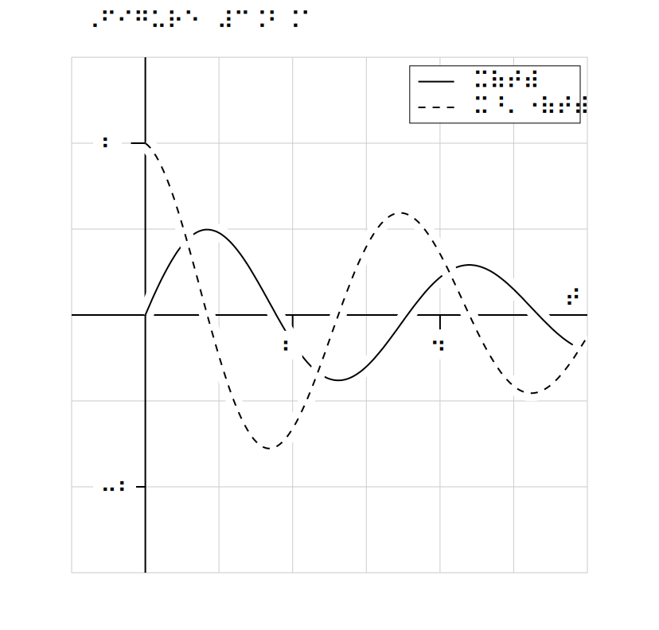

Section 6.2 Tactile diagrams
The original motivation for PreFigure arose from the difficulties in creating tactile diagrams from other source, such as TikZ.
Tactile diagrams, at least the kind that PreTeXt and PreFigure authors will want to create, are a relatively new medium, and, as such, there are still some conventions that are not yet firmly established. Ongoing research with blind and low-vision readers is determining best practices for the creation of tactile diagrams, and PreFigure will always implement these practices without demand on an author’s attention.
 1 
www.technologyreview.com/2023/06/15/1074036/ending-image-poverty/It cannot be stated strongly enough that attention to tactile diagrams will lead to the design of better diagrams for sighted readers. Authors are strongly encouraged to create and explore tactile versions of their PreFigure diagrams and strive for a clean design. There really is no excuse not to: it’s as easy as adding
-f tactile to the PreFigure bulid command.
Subsection 6.2.1 Anatomy of a tactile diagram
Before we examine a tactile diagram, we should first consider the medium used to produce them.
-
While tactile diagrams may be rendered in a variety of ways, PreFigure diagrams will be produced by an embosser on 11"\(\times\)11.5" paper. More specifically, the tactile diagrams created by PreFigure are optimized to be embossed on a ViewPlus embosser.
 2 
viewplus.com/A tactile diagram produced by PreFigure is meant to use as much of the page as possible. In particular, the diagram will most likely be scaled from the@dimensionsprovided in the<diagram>element in such a way as to preserve the aspect ratio of the@dimensions. -
You may think of an embosser as a very low-resolution printer, 20 dots per inch to be precise (compared to 300 dpi for a standard printer). An embossers works by raising the paper at a collection of these dots, each of which has a diameter of 0.057 inches. Dots can, however, be raised to a small number of different heights to simulate shading from white to gray to black.
-
Text in a tactile diagram will be rendered in braille. Each braille cell is a 3\(\times\)2 array of dots, and the interline spacing between braille cells is 0.4 inches. This means that a typical page has about 25\(\times\)40 cells or roughly 1000 cells. While a cell does not exactly correspond to a character of written text (some common words have braille contractions and some cells contain formatting information, such as a transition to italics), this figure speaks to the limitations of what can be conveyed in a tactile format. While authors may initially view this as a restriction, experienced authors will see this as a feature that encourages good design.
-
Mathematics is rendered in Nemeth braille by MathJax while regular text is converted by
liblouisinto UEB. It is essential thatliblouisbe installed if you wish to build tactile diagrams on your local PreFigure installation. A PreFigure codespace takes care of this automatically. -
Labels are embedded with the Braille29 font, which is included with PreFigure. Issuing the
prefig initcommand will install this font on Linux or Mac-OS, and this happens automatically when a codespace is created. -
The command
prefig pdf foowill create a PDF that embosses well on a ViewPlus embosser provided thatrsvg-convertis available. Again, this is provided in a codespace. The resolution given torsvg-convertshould always be 72, which is the PreFigure default.
With that said, let’s explore a tactile version of the ubiquitous tangent line figure, shown in Figure 6.2.1.
There is no need to show the PreFigure source for this diagram since it is the same that we saw earlier in Listing 6.1.2. Again, PreFigure adopts the PreTeXt motto: write once, read anywhere. Here are some things you may notice, however.
-
Foreground elements, such as the graph, tangent, and point, have a clear, white outline of 1/8". This is based on the experience of blind readers’ experience with PreFigure diagrams.
-
Labels sit on top of a clear, white rectangle so that they stand out from other elements. In fact, all labels are drawn last so that they sit on top of everything else.
-
Labels on axes are aligned with tick marks according to guidelines published by The Braille Authority of North America.
 3 
-
Colors are not informative in a tactile diagram so defaults are chosen to render well on an embosser. Filled regions will be rendered as lightgray and the stroke on, say, graphs will be changed to black.
-
The point is rendered with a radius of 9 SVG units, which translates into 1/8" when embossed. As with the white outline described above, authors should think of this distance as a good rule of thumb.
-
While this may not be apparent in this figure, labels are carefully positioned so that the braille cells in the resulting PDF will lie on top of the 20 dpi embossing grid. As a result, authors may sometimes notice that labels are not exactly where they expect since they will internally snap onto this grid.
Finally, notice the amount of space taken up by the braille label on the point, which translates into \((a,f(a))\text{.}\) It is not uncommon for the labels you produce to be surprisingly long when rendered in braille. This should lead authors to aspire to brevity in their use of labels, which is a design principle for better sighted diagrams as well. Reading text and processing graphical information are different cognitive tasks so be economical when using text in your diagrams. Instead, use a diagram’s caption and surrounding text to provide additional context.
Subsection 6.2.2 PreFigure considerations for tactile diagrams
With all of that said, attaining the goal of “write once, read anywhere†is aspirational, and authors will likely find that producing good tactile diagrams requires a bit of tweaking.
First off, any attribute in a PreFigure element can be overridden in tactile form by prepending
tactile- before it. While this applies to any attribute, there are likely two attributes where this is most important.
Since color cannot be used to disambiguate elements from one another, authors should consider stroking some features will a dashed line in a tactile diagram. To do so, set
@tactile-dash="9 9" in a component to be stroked with a dash in a tactile diagram
 4 
judsonbooks.org/ode-project/In the source given below, notice how one of the solution curves has both attributes
@stroke="red" and @tactile-dash="9 9". The stroke attribute will be automaticaly overridden to "black" in a tactile diagram. Setting the dash to "9 9" produces dashes that alternate 1/8" of stroke and 1/8" empty.
<diagram dimensions="(300,300)" margins="5">
<definition>f(t,y) = (0.4*y[0] - 0.01*y[0]*y[1],-0.3*y[1] + 0.005*y[0]*y[1])</definition>
<coordinates bbox="[-15,-15,70,100]">
<grid-axes xlabel="t"/>
<de-solve function="f" t0="0" t1="100" y0="(70,50)" name="oscillator"
N="200"/>
<plot-de-solution at="lynx" solution="oscillator" axes="(t,y0)" />
<plot-de-solution at="snowshoe" tactile-dash="9 9"
solution="oscillator" axes="(t,y1)" stroke="red"/>
<legend at="legend" anchor="(bbox[2], bbox[3])"
alignment="sw" scale="0.8" opacity="0.5">
<item ref="lynx"><m>F(t)</m></item>
<item ref="snowshoe"><m>H(t)</m></item>
</legend>
</coordinates>
</diagram>
The other attribute you may wish to override in tactile form is the
@offset attribute of labels. PreFigure tries to place labels appropriately so that they don’t overlap with other elements, but an author will sometimes need to push a label a bit away from its default location. Setting tactile-offset="(4,4)" will push the label an additional four units horiztonally and vertically before snapping onto the 20 dpi embossing grid.
Finally, as discussed in Section 3.2, since every foreground component in a tactile diagram is outlined, you may need to put components in a
<group> and the attribute @outline="tactile", which will first paint all the outlines in the group before painting the components themselves.
@outline="tactile".<diagram dimensions="(300,300)" margins="5">
<coordinates bbox="(-1,-1,5,5)">
<definition>f(x) = exp(-x) + 2</definition>
<definition>g(x) = -exp(-x) + 2</definition>
<grid-axes/>
<group outline="tactile">
<graph function="f"/>
<graph function="g"/>
</group>
</coordinates>
</diagram>
Subsection 6.2.3 Captions in tactile diagrams
PreFigure tactile diagrams can, of course, be included in a PreTeXt document. When a braille version of the document is created, the diagrams will be distributed as a set of PDFs separate from the rest of the document. To help locate a given diagram within the document, PreTeXt adds a caption along the top of the diagram, which says something like “Figure 3.2.1”, as indicated in Figure 6.2.6. This is meant to assist the person assembling the complete document.

Since PreTeXt automatically adds the caption, you will most likely never need to worry about it. However, should you want to add a caption manually, you can place a
<caption> element as a child of the <diagram> as seen in Listing 6.2.7.
<diagram dimensions="(300,300)" margins="5">
<caption>Figure 3.2.1</caption>
<definition>f(t,y) = (y[1], -pi*y[0]-0.3*y[1])</definition>
<coordinates bbox="[-1,-3,6,3]">
<grid-axes xlabel="t"/>
<de-solve function="f" t0="0" t1="bbox[2]"
y0="(0,2)" name="oscillator"
N="200"/>
<plot-de-solution at="x" solution="oscillator"
axes="(t,y0)" />
<plot-de-solution at="xprime" solution="oscillator"
axes="(t,y1)" stroke="red"
tactile-dash="9 9"/>
<legend at="legend" anchor="(bbox[2], bbox[3])"
alignment="sw" scale="0.9" opacity="0.5">
<item ref="x"><m>x(t)</m></item>
<item ref="xprime"><m>x'(t)</m></item>
</legend>
</coordinates>
</diagram>
Captions are ignored except when generating a tactile version of the diagram. If a diagram has a
<caption> element, perhaps added by PreTeXt, its inclusion in a tactile version can be suppressed by including the -s flag in the build command:
prefig build -f tactile -s foo.xml